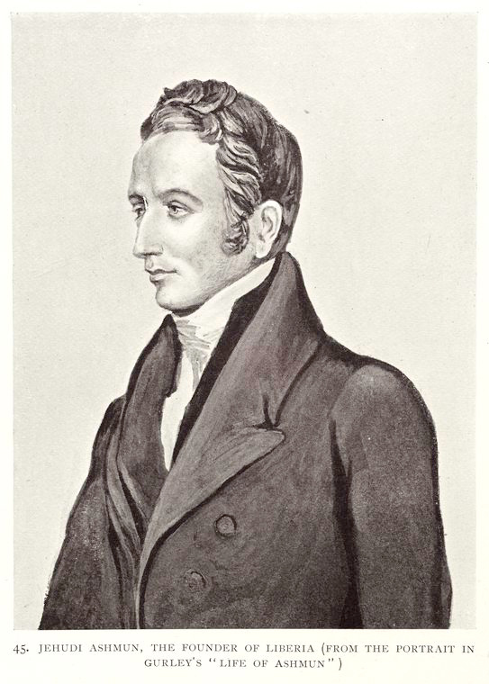

A Liberian lady
Photograph from Liberia, Vol. 1, 1906
Sir Harry Johnston (Photographer); Hutchinson & Co., London (Publisher)
Schomburg Center for Research in Black Culture, Jean Blackwell Hutson Research and Reference Division, The New York Public Library. "A Liberian lady" The New York Public Library Digital Collections. 1906. https://digitalcollections.nypl.org/items/510d47dd-d8d7-a3d9-e040-e00a18064a99
Rev. R. L. Stewart; The Training and Industrial Mission School, Monrovia, Liberia, West Coast of Africa, Founded December, 1892.
Photograph from Twenty-eight years a slave : or, The story of my life in three continents, 1909
W. Mate, London (Publisher)
Schomburg Center for Research in Black Culture, Jean Blackwell Hutson Research and Reference Division, The New York Public Library. "Rev. R. L. Stewart; The Training and Industrial Mission School, Monrovia, Liberia, West Coast of Africa, Founded December, 1892." The New York Public Library Digital Collections. 1909. https://digitalcollections.nypl.org/items/510d47df-a278-a3d9-e040-e00a18064a99
Mandingo woman of Western Liberia
Photograph from Liberia, Vol. 1, 1906
Sir Harry Johnston (Photographer); Hutchinson & Co., London (Publisher)
Schomburg Center for Research in Black Culture, Jean Blackwell Hutson Research and Reference Division, The New York Public Library. "Mandingo woman of Western Liberia" The New York Public Library Digital Collections. 1906. https://digitalcollections.nypl.org/items/510d47dc-9497-a3d9-e040-e00a18064a99
A wedding at Government house, Monrovia
Photograph from Liberia, Vol. 1, 1906
Sir Harry Johnston (Photographer); Hutchinson & Co., London (Publisher)
Schomburg Center for Research in Black Culture, Jean Blackwell Hutson Research and Reference Division, The New York Public Library. "A wedding at Government house, Monrovia" The New York Public Library Digital Collections. 1906. https://digitalcollections.nypl.org/items/510d47dc-9519-a3d9-e040-e00a18064a99
A good-looking type of Vai woman from Vanswa, near Monrovia
Photograph from Liberia, Vol. 1, 1906
Sir Harry Johnston (Photographer); Hutchinson & Co., London (Publisher)
Schomburg Center for Research in Black Culture, Jean Blackwell Hutson Research and Reference Division, The New York Public Library. "A good-looking type of Vai woman from Vanswa, near Monrovia" The New York Public Library Digital Collections. 1906. https://digitalcollections.nypl.org/items/510d47de-4c4b-a3d9-e040-e00a18064a99

Jehudi Ashmun, the founder of Liberia
Illustration from Liberia, Vol. 1, 1906
Sir Harry Johnston (Photographer); Hutchinson & Co., London (Publisher)
Schomburg Center for Research in Black Culture, Jean Blackwell Hutson Research and Reference Division, The New York Public Library. "Jehudi Ashmun, the founder of Liberia (from the portrait in Gurley's "Life of Ashmun")" The New York Public Library Digital Collections. 1906. https://digitalcollections.nypl.org/items/510d47dc-930e-a3d9-e040-e00a18064a99
A Liberian family group
Photograph from Liberia, Vol. 1, 1906
Sir Harry Johnston (Photographer); Hutchinson & Co., London (Publisher)
Schomburg Center for Research in Black Culture, Jean Blackwell Hutson Research and Reference Division, The New York Public Library. "A Liberian family group" The New York Public Library Digital Collections. 1906. https://digitalcollections.nypl.org/items/510d47dc-9412-a3d9-e040-e00a18064a99